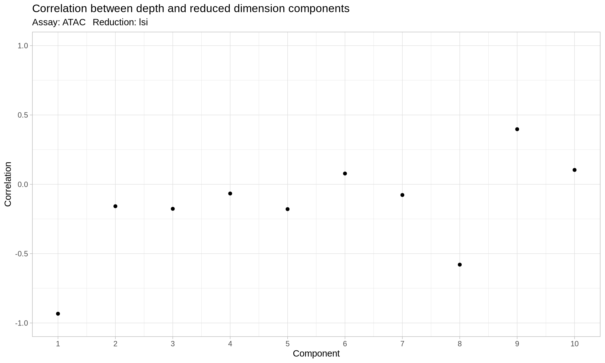
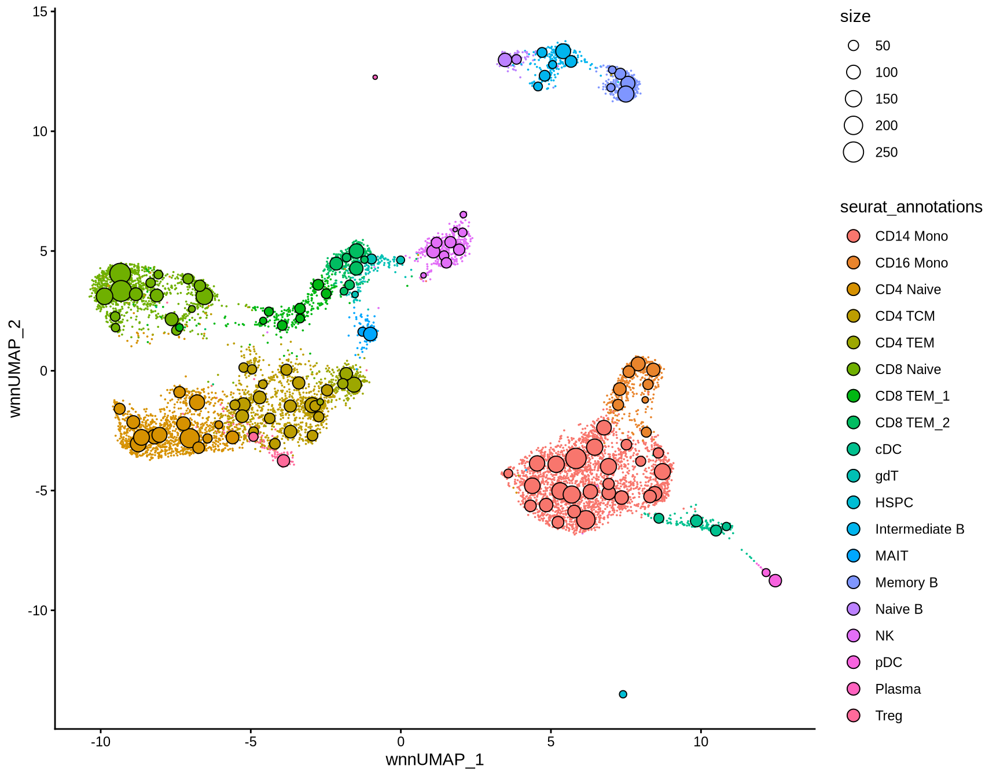
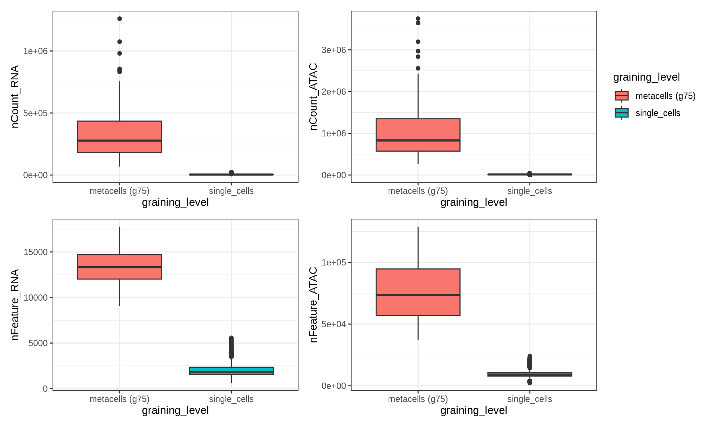
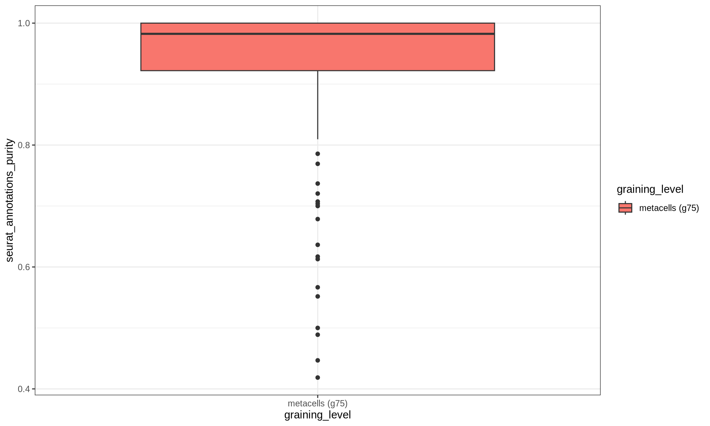
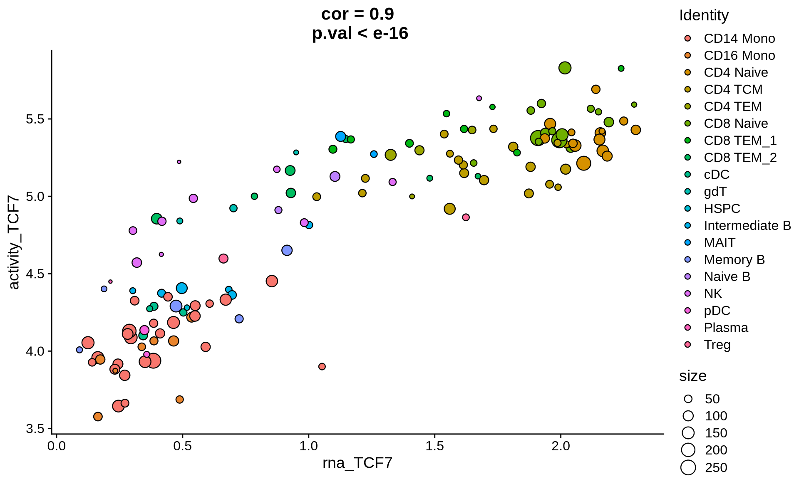

SuperCell 2.0 Tutorial: PBMC 10X multiome Analysis
Léonard Hérault
2026-02-06
1 Tutorial setup
Installing SuperCell2.0 package from gitHub
if (!requireNamespace("remotes")) install.packages("remotes")
remotes::install_github("GfellerLab/SuperCell@develop")
if (!requireNamespace("SeuratData")) {remotes::install_github('satijalab/seurat-data')}
1.1 Load library
library(Seurat)
library(Signac)
library(dplyr)
library(EnsDb.Hsapiens.v86)
library(BSgenome.Hsapiens.UCSC.hg38)
library(SuperCell)
library(ggplot2)
library(patchwork)1.2 Load PBMC 10X multiome datasets
Bone Marrow CITE-seq data were generated by 10X genomics Stuart et al., 2019 and finely annotated in Hao et al., 2021.
First we have to download the ATAC fragment file for this dataset from 10X website. This can take few minutes (2.2 GB)
dir.create("./PBMC_10Xmultiome/fragments/",recursive = T)
dest.fragment.file <- "./PBMC_10Xmultiome/fragments/pbmc_granulocyte_sorted_10k_atac_fragments.tsv.gz"
url.fragment.file <- "https://cf.10xgenomics.com/samples/cell-arc/2.0.0/pbmc_granulocyte_sorted_10k/pbmc_granulocyte_sorted_10k_atac_fragments.tsv.gz"
if (!file.exists(dest.fragment.file)) {
options(timeout = 600)
download.file(url, dest.fragment.file = dest, mode = "wb")
}We also need the corresponding index file.
dest.index.file <- "./PBMC_10Xmultiome/fragments/pbmc_granulocyte_sorted_10k_atac_fragments.tsv.gz.tbi"
url.index.file <- "https://cf.10xgenomics.com/samples/cell-arc/2.0.0/pbmc_granulocyte_sorted_10k/pbmc_granulocyte_sorted_10k_atac_fragments.tsv.gz.tbi"
if (!file.exists(dest.index.file)) {
download.file(url.index.file, destfile = dest.index.file, mode = "wb")
}Then we can install the Seurat dataset with RNA counts using the SeuratData package.
options(timeout=600)
SeuratData::InstallData("pbmcMultiome")
pbmc <- SeuratData::LoadData("pbmcMultiome", "pbmc.atac")
grange.counts <- StringToGRanges(rownames(pbmc))
grange.use <- seqnames(grange.counts) %in% standardChromosomes(grange.counts)
pbmc <- pbmc[as.vector(grange.use), ]
annotations <- GetGRangesFromEnsDb(ensdb = EnsDb.Hsapiens.v86)
# seqlevelsStyle(annotations)
# seqlevelsStyle(annotations) <- "UCSC"
# Manual conversion if seqlevelsStyle(annotations) isn't working
seqlevels(annotations) <- paste0("chr", seqlevels(annotations))
# Fix mitochondrial chromosome
seqlevels(annotations)[seqlevels(annotations) == "chrMT"] <- "chrM"
genome(annotations) <- "hg38"
#Updating chromatine assay with fragment file
pbmc[["ATAC"]] <- CreateChromatinAssay(counts = GetAssayData(pbmc,layer = "counts"),
genome = "hg38",
fragments = dest.fragment.file,
annotation = annotations
)
# load RNA assay from the pbmc.rna datasets
# and add it to the pbmc object
# SuperCell2.0 can handle both v3 and v5 assay
pbmc[["RNA"]] <- CreateAssay5Object(counts = GetAssayData(SeuratData::LoadData("pbmcMultiome", "pbmc.rna")[["RNA"]],
layer = "counts"))
gc()
#> used (Mb) gc trigger (Mb) max used (Mb)
#> Ncells 15382899 821.6 26979587 1440.9 26979587 1440.9
#> Vcells 431324805 3290.8 1160585517 8854.6 1158406029 8838.0These data have already undergone quality control an are annotated in
"seurat_annotations" poor-quality cells as
"filtered". We discard these cells for the following og
this tutorial.
head(FetchData(pbmc,c("seurat_annotations")))
#> seurat_annotations
#> AAACAGCCAAGGAATC-1 CD4 Naive
#> AAACAGCCAATCCCTT-1 CD4 TCM
#> AAACAGCCAATGCGCT-1 CD4 Naive
#> AAACAGCCACACTAAT-1 filtered
#> AAACAGCCACCAACCG-1 CD8 Naive
#> AAACAGCCAGGATAAC-1 CD4 Naive
pbmc <- subset(pbmc,seurat_annotations != "filtered")
gc(verbose = F)
#> used (Mb) gc trigger (Mb) max used (Mb)
#> Ncells 15381085 821.5 26979587 1440.9 26979587 1440.9
#> Vcells 543405375 4145.9 1160585517 8854.6 1158406029 8838.0
pbmc
#> An object of class Seurat
#> 144945 features across 10412 samples within 2 assays
#> Active assay: ATAC (108344 features, 0 variable features)
#> 2 layers present: counts, data
#> 1 other assay present: RNA1.3 Settings
Lets define some settings for this tutorial.
1.4 Settings
graining.level <- 752 Single cell preprocessing
2.1 Peak calling with MACS2 (optional)
Seurat object contains broad peaks. In this tutorial, as in SuperCell2.0 manuscript we propose to call narrow peaks with MACS2. Narrow peaks are expected to be better for certain downstream ATAC analyses (TF motifs, GRN).
DefaultAssay(pbmc) <- "ATAC"
pbmc[["ATAC"]] <- subset(pbmc[["ATAC"]] , features = rownames(pbmc[["ATAC"]] )[1:2]) #a trick to save memory as we are calling new peaks
gc()
peaks <- CallPeaks(
object = pbmc,
macs2.path = "/home/l_herault/miniconda3/envs/macs2_env/bin/macs2",
group.by = "seurat_annotations",
additional.args = "--max-gap 50"
)
peaks <- keepStandardChromosomes(peaks, pruning.mode = "coarse")
peaks <- subsetByOverlaps(x = peaks, ranges = blacklist_hg38_unified, invert = TRUE)
peak.counts <- FeatureMatrix(
fragments = Fragments(pbmc),
features = peaks,
cells = colnames(pbmc)
)
pbmc[["ATAC"]] <- CreateChromatinAssay(
counts = peak.counts,
genome = 'hg38',
min.cells = 1,
annotation=annotations,
fragments = Fragments(pbmc)
)
remove(peak.counts)
gc()2.2 Dimension reductions
Before identifying metacells we have to preprocess the single cell data. This includes data normalization and dimension reduction of each modality. For this we can follow the SCTransform Seurat workflow and the LSI Signac workflow as in SuperCell2.0 manuscript.
DefaultAssay(pbmc) <- "RNA"
options(future.globals.maxSize = 1.5 * 1024 ^ 3)
pbmc <- SCTransform(pbmc, verbose = FALSE,conserve.memory = T) %>% RunPCA()
DefaultAssay(pbmc) <- "ATAC"
pbmc[["SCT"]] <- NULL #once we have the PCA we can discard the SCT assay
DefaultAssay(pbmc) <- "ATAC"
pbmc <- RunTFIDF(pbmc)
pbmc <- FindTopFeatures(pbmc, min.cutoff = "q0")
pbmc <- RunSVD(pbmc)
gc()
#> used (Mb) gc trigger (Mb) max used (Mb)
#> Ncells 15535105 829.7 26979587 1440.9 26979587 1440.9
#> Vcells 570129783 4349.8 1114242096 8501.0 1158406029 8838.0The fist compenent of lsi dimension reduction is correlated with sequencing depth of the ATAC modality. Thus, we discard it for metacell identification and downstream analysis.
DepthCor(pbmc)
rna.comp <- c(1:40) # components used from the dimension redcution of the RNA modality
atac.comp <- c(2:40) # components used from the dimension reduction of the ATAC modality
2.3 Single-cell multimodal integration
Based on this dimension reductions we can integrate protein and RNA modalities together using the WNN approach from Seurat. This step is not required for metacell identification but we will use the single-cell final UMAP embedding to visually assess metacell quality.
pbmc <- FindMultiModalNeighbors(pbmc,
reduction.list = list("pca", "lsi"),
dims.list = list(rna.comp, atac.comp)
)
pbmc <- RunUMAP(pbmc, nn.name = "weighted.nn",
reduction.name = "wnn.umap",
reduction.key = "wnnUMAP_")
DimPlot(pbmc,group.by = "seurat_annotations")
3 Metacell identification with SuperCell2.0
3.1 Unsupervised multimodal metacell identification
We can identify metacells based on protein and RNA modalities.
pbmc.mc.multi <- SCimplify_for_Seurat(
pbmc,
assay = c("RNA","ADT"),
reduction = list("pca", "lsi"),
dims = list(rna.comp, atac.comp),
gamma = graining.level
)
#> RNA ADTSCimply_for_Seurat function gives a seurat metacell
object with aggregated (summed) raw counts for each modality. All
categorical metadata available in the single cell seurat object are also
aggregated in the resulting metacell object by assigning the metacell to
the label with the maximum absolute abundance within it.
pbmc.mc.multi
#> An object of class Seurat
#> 192703 features across 138 samples within 2 assays
#> Active assay: RNA (36601 features, 0 variable features)
#> 1 layer present: counts
#> 1 other assay present: ATAC
head(FetchData(pbmc.mc.multi,c("seurat_annotations","seurat_annotations_purity","size")))
#> seurat_annotations seurat_annotations_purity size
#> Metacell_1 cDC 0.9571429 70
#> Metacell_2 CD4 Naive 0.9682540 126
#> Metacell_3 CD8 Naive 1.0000000 87
#> Metacell_4 CD8 TEM_2 0.9911504 113
#> Metacell_5 CD14 Mono 0.9921875 256
#> Metacell_6 CD4 TEM 0.9674797 123The misc slot of the metacell seurat object contain information about SuperCell2.0 run that can be used for quality control such as coverage plot and direct rescaling (see below).
names(pbmc.mc.multi@misc)
#> [1] "metacells_hierarchy" "walktrap_clusters" "gamma" "membership"
#graining level used
head(pbmc.mc.multi@misc$gamma)
#> [1] 75
# membership vector linking single cells to metacells
head(pbmc.mc.multi@misc$membership)
#> AAACAGCCAAGGAATC-1 AAACAGCCAATCCCTT-1 AAACAGCCAATGCGCT-1 AAACAGCCACCAACCG-1 AAACAGCCAGGATAAC-1 AAACAGCCAGTAGGTG-1
#> 15 10 15 112 2 3
#metacells_hierarchy used for rescaling
head(pbmc.mc.multi@misc$metacells_hierarchy$merges)
#> [,1] [,2]
#> [1,] 2958 4644
#> [2,] 8536 8894
#> [3,] 4621 9523
#> [4,] 3605 4065
#> [5,] 10230 10413
#> [6,] 964 2299After identifying the metacells, a coverage plot of the single-cell latent space (if available) can be used to quickly assessed metacell quality.
cov.multi.unsup <- DimPlotSC(pbmc,
pbmc.mc.multi,
reduction = "wnn.umap",
sc.col = "seurat_annotations",
metacell.col = "seurat_annotations")
cov.multi.unsup
We can appreciate the reduction in dropout noise on the RNA and ATAC modalities by looking at UMI counts and detected features per single-cells/metacells
pbmc$graining_level <- "single_cells"
pbmc.mc.multi$graining_level <- "metacells (g75)"
coverage_results <- rbind(FetchData(pbmc,c("nCount_RNA","nFeature_RNA",
"nCount_ATAC","nFeature_ATAC",
"graining_level")),
FetchData(pbmc.mc.multi,c("nCount_RNA","nFeature_RNA",
"nCount_ATAC","nFeature_ATAC",
"graining_level"))
)
p1 <- ggplot(coverage_results,aes(x= graining_level,y = nCount_RNA,fill = graining_level)) +
geom_boxplot() + theme_bw()
p2 <- ggplot(coverage_results,aes(x= graining_level,y = nCount_ATAC,fill = graining_level)) +
geom_boxplot() + theme_bw()
p3 <- ggplot(coverage_results,aes(x= graining_level,y = nFeature_RNA,fill = graining_level)) +
geom_boxplot() + theme_bw()
p4 <- ggplot(coverage_results,aes(x= graining_level,y = nFeature_ATAC,fill = graining_level)) +
geom_boxplot()+ theme_bw()
wrap_plots(p1 + NoLegend(), p2, p3+ NoLegend(), p4 + NoLegend()) 
3.2 Metacell purity
We can evaluate the obtained metacells based on their purities with respect to the original single-cell annotation.
ggplot(FetchData(pbmc.mc.multi,c("graining_level","seurat_annotations_purity")),
aes(x= graining_level, fill = graining_level,y = seurat_annotations_purity)) +
geom_boxplot() +
theme_bw()
We don’t need the single-cell object anymore
# saveRDS(pbmc.mc.multi,'pbmc_mc.rds')
remove(pbmc)
gc()
#> used (Mb) gc trigger (Mb) max used (Mb)
#> Ncells 15538777 829.9 26979587 1440.9 26979587 1440.9
#> Vcells 589983661 4501.3 1114242096 8501.0 1158406029 8838.03.3 Aggregating fragment file at the metacell level
Some downstream analysis for the ATAC modality require a fragment
file. We can create one for our metacell object using the membership
vector and the AggregateFragmentFile function.
This aggregation can be multithreaded by specifying a number of cores
to use with the nb_cl arguments.
membership.vec <- paste0("Metacell_",pbmc.mc.multi@misc$membership)
names(membership.vec) <- names(pbmc.mc.multi@misc$membership)
mc.frag.path <- AggregateFragmentFile(input_file = dest.fragment.file,
tmp_path = "./tmp/", # has to be empty
nb_cl = 4, # number of cores to use
output_path = "./PBMC_10Xmultiome/fragments/",
membership = membership.vec)
#> [1] "/home/l_herault/Documents/SuperCell/tutorials/PBMC_10Xmultiome/fragments/MC_pbmc_granulocyte_sorted_10k_atac_fragments.tsv.gz aggregated framgent files already exists, it will be overwritten"
#> [1] "Start fragments file split"
#> [1] "Start parallel update"
#> [1] "Start concat"
#> [1] "End concat, start bgzip"
#> [1] "End bgzip, start tabix"
#> [1] "End tabix"
frag.mc <- CreateFragmentObject(mc.frag.path,
cells = colnames(pbmc.mc.multi))
Fragments(pbmc.mc.multi[["ATAC"]]) <- frag.mc
gc()
#> used (Mb) gc trigger (Mb) max used (Mb)
#> Ncells 15561775 831.1 26979587 1440.9 26979587 1440.9
#> Vcells 589350228 4496.4 1114242096 8501.0 1158406029 8838.04 Metacell downstream analysis
4.1 Gene activities at the metacell level
Now that we have aggregated the fragment file at the metacell level we can compute gene activities (eg. gene body accessibility) in our metacells. We can do this for the top variable genes in the RNA modality.
DefaultAssay(pbmc.mc.multi) <- "ATAC"
gene.activities <- GeneActivity(object = pbmc.mc.multi,
assay = "ATAC",
features = rownames(pbmc.mc.multi[["RNA"]]))
pbmc.mc.multi[["ACTIVITY"]] <- CreateAssayObject(counts = gene.activities)
DefaultAssay(pbmc.mc.multi) <- "ACTIVITY"
pbmc.mc.multi <- NormalizeData(
pbmc.mc.multi, assay = "ACTIVITY",
normalization.method = "LogNormalize",
scale.factor = median(pbmc.mc.multi$nCount_ACTIVITY)
)4.2 Intermodality correlation
Finally we can evaluate the correlation between gene activity and gene expression in our metacells for selected genes. For this we have to normalize the RNA assay in our metacells first. We can do this for TCF7 a TF of naive T cells.
DefaultAssay(pbmc.mc.multi) <- "RNA"
pbmc.mc.multi <- NormalizeData(pbmc.mc.multi)
FeatureScatter.SuperCell(pbmc.mc.multi,
feature1 = "rna_TCF7",
feature2 = "activity_TCF7",
group.by = "seurat_annotations")